This project aligns overlapping photographs using homographies. I first recover the transformation from manually selected correspondences, then implement inverse warping with nearest-neighbor and bilinear interpolation. Finally, I blend the aligned images into three mosaics. Click any image to view the image file.
I used three pairs: a Berkeley landscape, my kitchen (a bit messy haha), and my apartment elevators. Each pair shows overlapping views of the same scene. The intended capture method is to rotate the camera about a fixed center of projection so that one homography describes the views, I tried my best to do this and almost all of them ended up pretty good. Camera translation and nearby objects can introduce parallax, the kitchen results below show remaining alignment errors which shows the realism of my transformations.
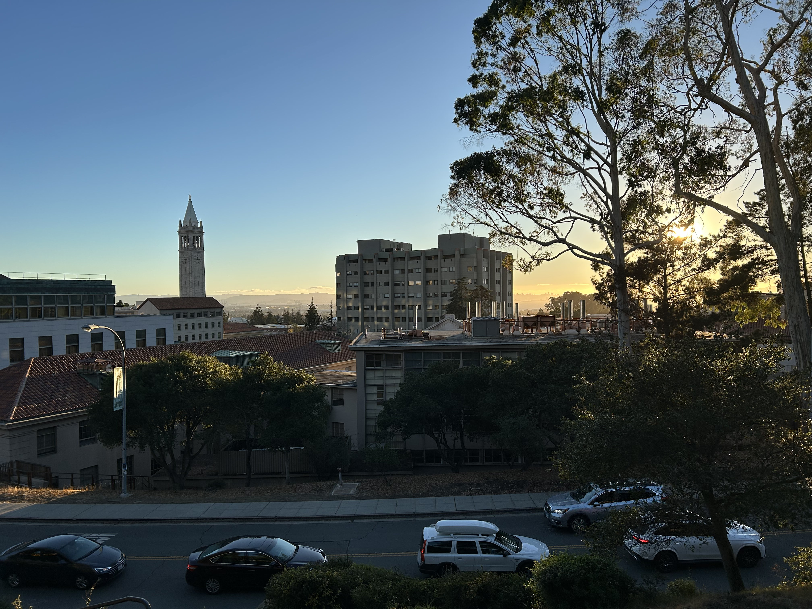
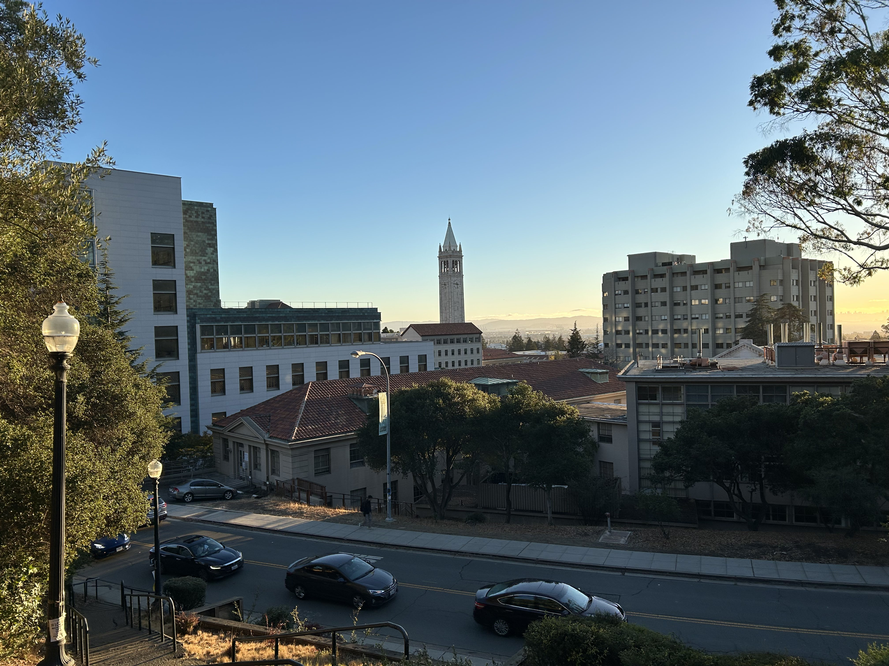
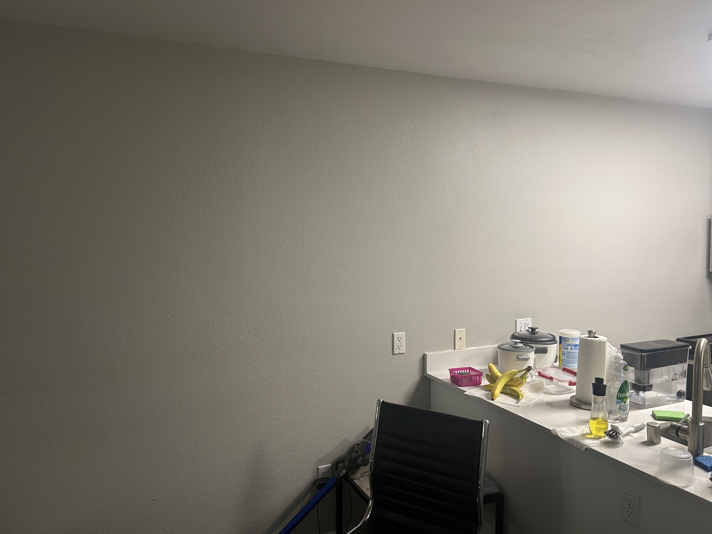
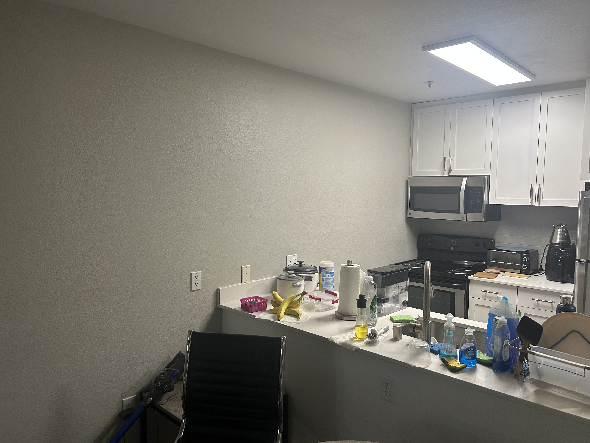
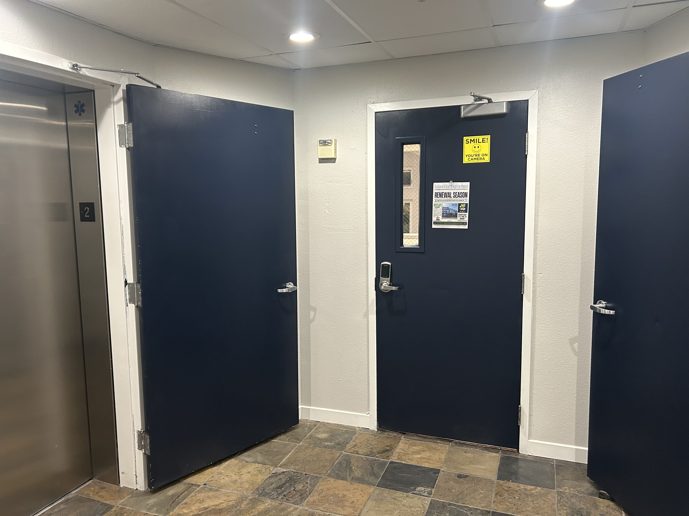
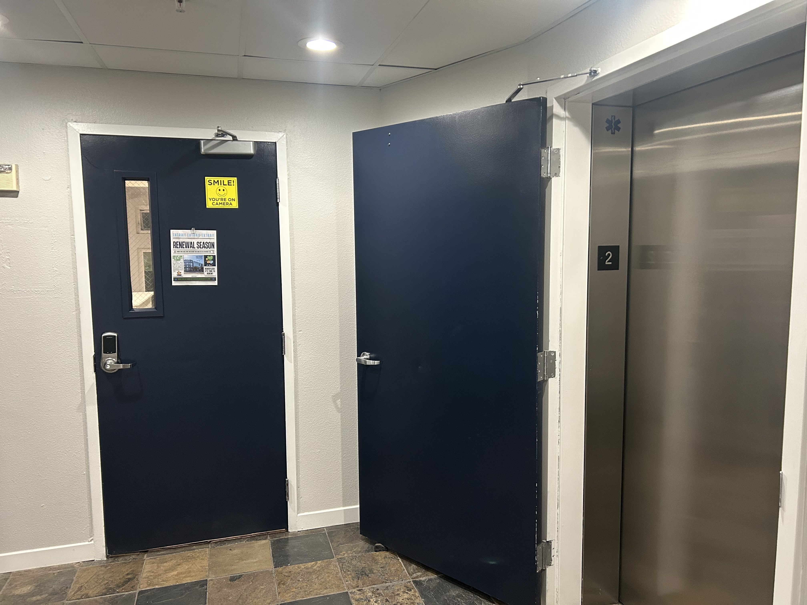
I selected 14 matching points for the two views of Berkeley using the provided correspondence tool and loaded its JSON export. Matching numbers identify the same scene point in both images. Coordinates are (x, y), with x increasing rightward and y downward.
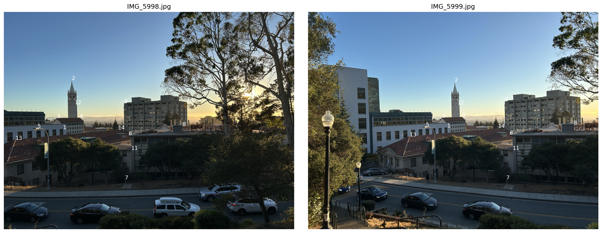
The homography maps a source point (x, y) to a target point (u, v). I set the lower-right entry to 1, leaving eight unknowns:
[ h11 h12 h13 ]
H = [ h21 h22 h23 ]
[ h31 h32 1 ]
u = (h11*x + h12*y + h13) / (h31*x + h32*y + 1)
v = (h21*x + h22*y + h23) / (h31*x + h32*y + 1)
Rearranging gives two linear equations for each correspondence:
[ x y 1 0 0 0 -u*x -u*y ] h = [ u ] [ 0 0 0 x y 1 -v*x -v*y ] [ v ] h = [h11, h12, h13, h21, h22, h23, h31, h32]^T A h = b
Stacking 14 pairs produces a 28 × 8 matrix A and a 28-element vector b. My computeH(im1_pts, im2_pts) uses np.linalg.lstsq to minimize ||Ah − b||², then reshapes the eight coefficients and the fixed 1 into H. This uses more than four points to reduce sensitivity to individual selection errors.
[[ 5.60130881e-01 -1.95984049e-03 1.29689267e+03] [-1.72522359e-01 8.33622755e-01 2.43378784e+02] [-1.09617801e-04 -1.31125855e-06 1.00000000e+00]]
This matrix uses full-resolution image coordinates. After projecting the selected points and dividing by the homogeneous coordinate, the mean Euclidean reprojection error is 3.76 pixels and the maximum is 9.58 pixels. These are errors on the same points used to fit H, not an independent test.
Both warpImageNearestNeighbor(im, H) and warpImageBilinear(im, H) use inverse warping. I project the source image corners to find the output bounds, then map each output pixel back through H^-1. Dividing by the third coordinate gives the source location to sample. I have pixels outside the source image remain transparent.
[x, y, w]^T = H⁻¹ [u, v, 1]^T source location = (x/w, y/w)
Nearest-neighbor interpolation rounds the source coordinates to the nearest pixel. Bilinear interpolation combines the four surrounding pixels. For x₀ = floor(x), y₀ = floor(y), a = x − x₀, and b = y − y₀:
I(x,y) = (1-a)(1-b) I(x₀,y₀) + a(1-b) I(x₀+1,y₀)
+ (1-a)b I(x₀,y₀+1) + ab I(x₀+1,y₀+1)
I had the interpolation calculations implemented directly in NumPy. The neighbor indices are kind of clamped at the source boundary.
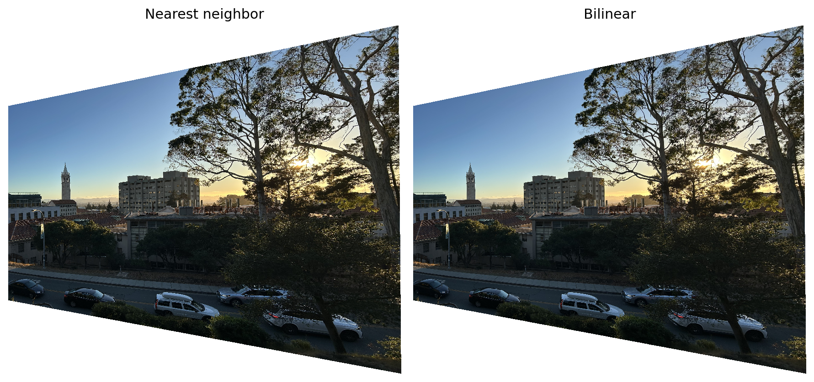
For each artwork, I use four outer frame corners as source points and define a rectangular destination by hand. The corner order is top left, top right, bottom right, bottom left. The approximate app measurements determine the rectangle’s width-to-height ratio; they are not exact measurements. I use 40 pixels per inch for the target coordinate spans. Each example uses its own homography.
Approximate dimensions (Used Apple Measuring App): 29.5 × 41 inches (width × height). Output: 1181 × 1641 pixels.
Source corners: [[350, 136], [2628, 532], [2639, 3435], [267, 3705]] Target corners: [[0, 0], [1180, 0], [1180, 1640], [0, 1640]]
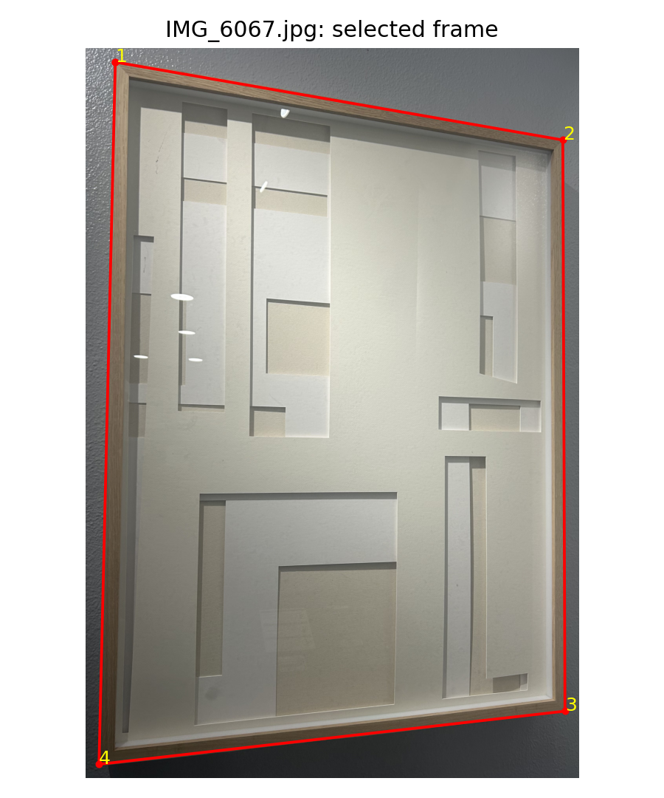
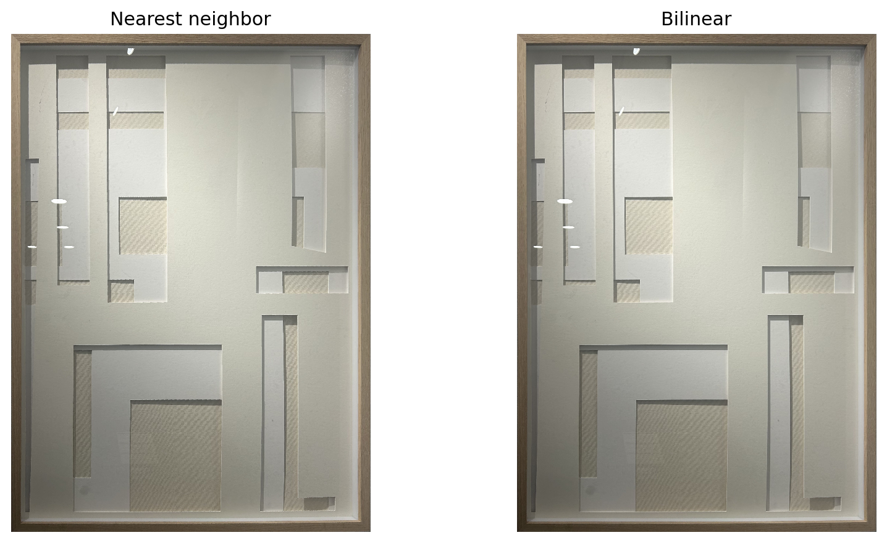
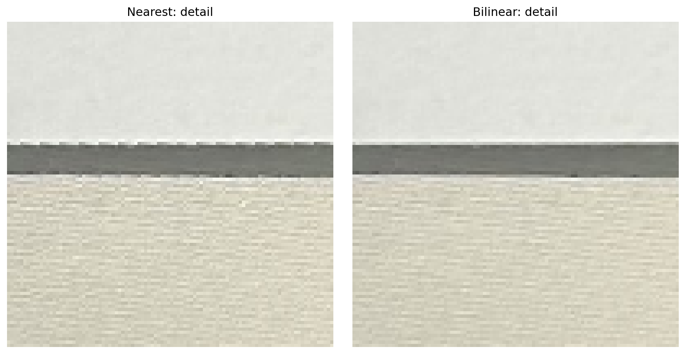
[[ 4.09654505e-01 9.52684895e-03 -1.44674728e+02] [-8.07093188e-02 4.64282395e-01 -3.48941441e+01] [-8.03342042e-05 9.69347314e-06 1.00000000e+00]]
Approximate dimensions (Once again used measuring app): 40 × 57 inches (width × height). Output: 1601 × 2281 pixels.
Source corners: [[438, 519], [2488, 23], [2528, 3825], [491, 3420]] Target corners: [[0, 0], [1600, 0], [1600, 2280], [0, 2280]]
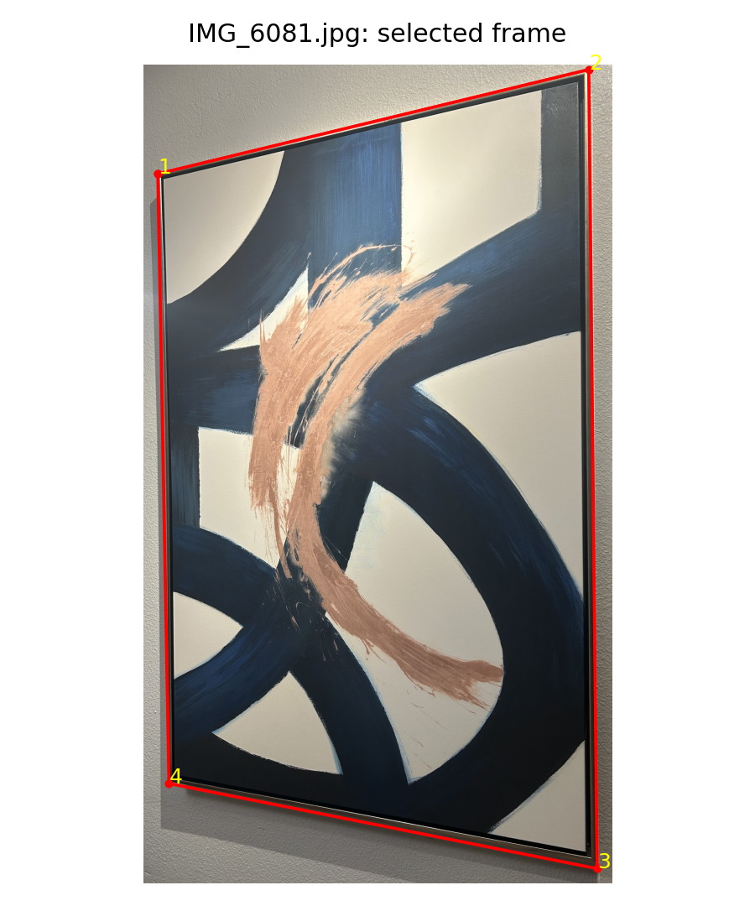
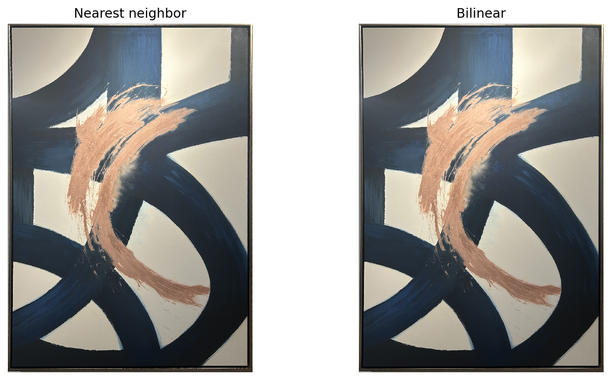
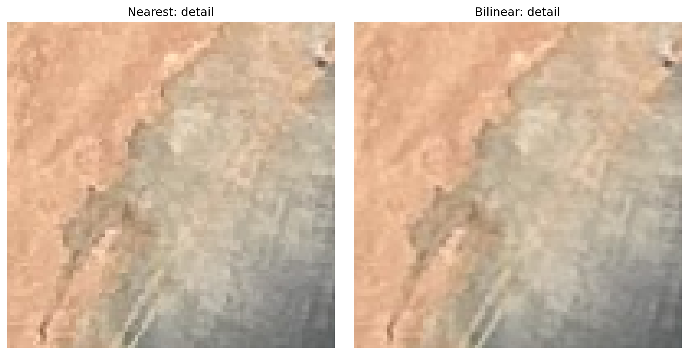
[[ 1.08821075e+00 -1.98811340e-02 -4.66318001e+02] [ 1.99779128e-01 8.25700023e-01 -5.16041570e+02] [ 1.61010190e-04 -6.96414616e-06 1.00000000e+00]]
The frames become rectangular in both examples. Nearest neighbor keeps individual pixel values but produces more jagged edges when magnified. On the other hand Bilinear interpolation gives smoother edges, with some smoothing of fine details. Rectification changes perspective but it does not remove reflections or flatten the physical depth of the geometric artwork which we can see. My apartment's artwork is unharmed!
| Example | Nearest neighbor | Bilinear |
|---|---|---|
| Berkeley warp | 1.543 s | 2.575 s |
| Geometric Art | 0.182 s | 0.311 s |
| Abstract Art | 0.308 s | 0.556 s |
These are warp times from one saved run, this is not including figure creation and file saving. Nearest neighbor is faster because it samples one pixel, bilinear uses four samples and weights. I use bilinear for the mosaics to make resampling edges smoother and the images come out nicer.
For each pair, I estimate H from the supplied correspondences and keep the second image as the reference view. The crossover of the transformed first image corners and the reference image bounds kind of creates my mosaic canvas. A translation moves this canvas into nonnegative coordinates. Then I inverse warp both images onto it with bilinear interpolation.
I rendered the mosaic images half resolution to reduce massive computation. After some research I found Pillow’s Lanczos filter and only used it for this initial resize. I transform H into the resized coordinate system but the actual perspective warp uses my bilinear implementation.
For blending, each valid pixel receives a weight equal to its distance from the nearest invalid pixel in that image’s warped mask. I compute these distances with scipy.ndimage.distance_transform_edt. Pixels farther from an image boundary have more influence. In the overlap, I normalize the weighted sum like this:
mosaic = (w₁ I₁ + w₂ I₂) / (w₁ + w₂)
Where only one image is valid, its color is preserved. Where neither image is valid, the output is transparent. Feathering softens seams but cannot correct mismatched geometry or moving objects.
IMG_5998 → IMG_5999; 14 correspondences. Full resolution mean reprojection error: 3.76 px; maximum: 9.58 px.
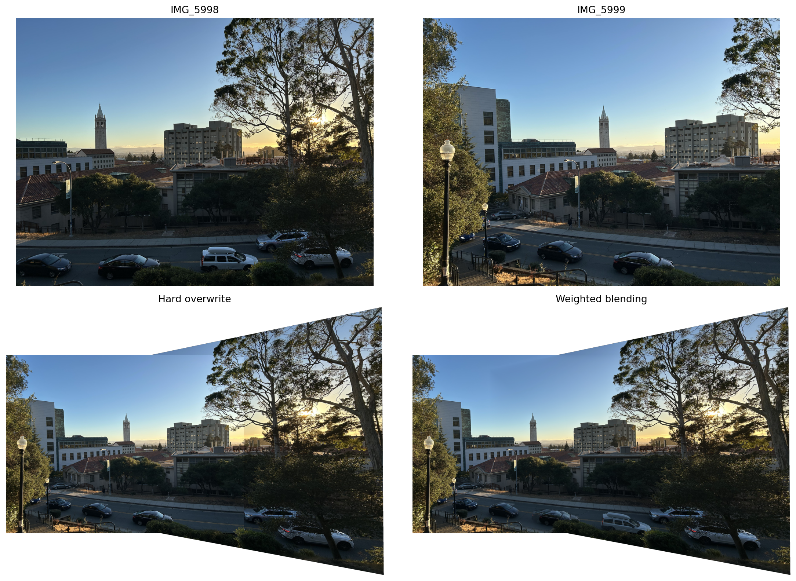
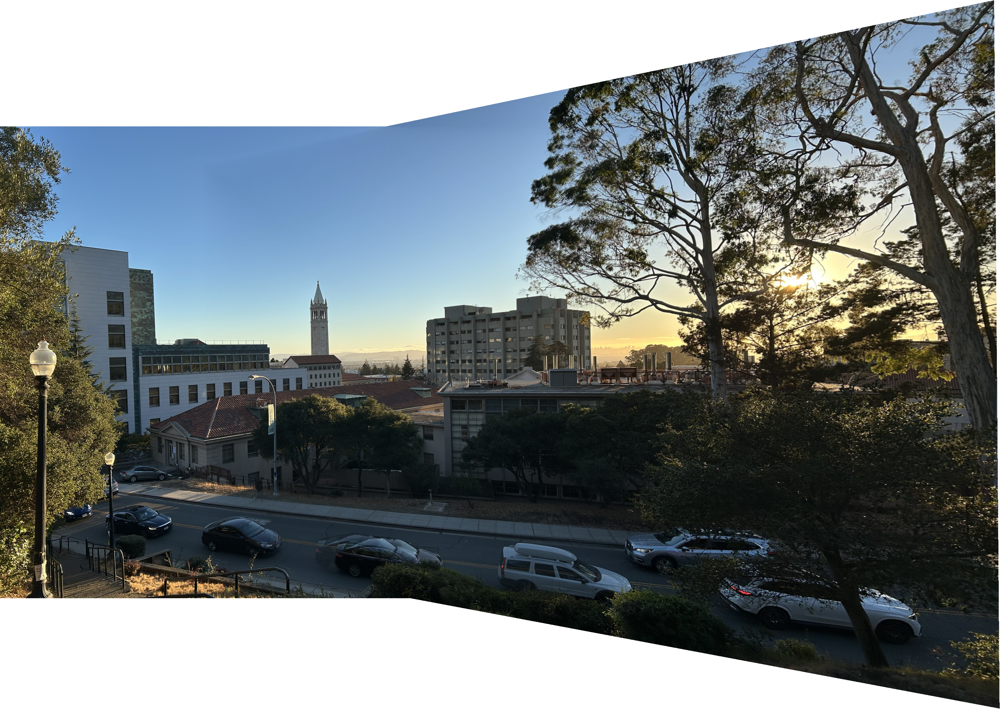
The building aligns well overall. Some moving cars appear twice, and the sky has an exposure difference between the photographs.
Kitchen Left → Kitchen Right; 18 correspondences. Full resolution mean reprojection error: 41.66 px; maximum: 101.80 px.
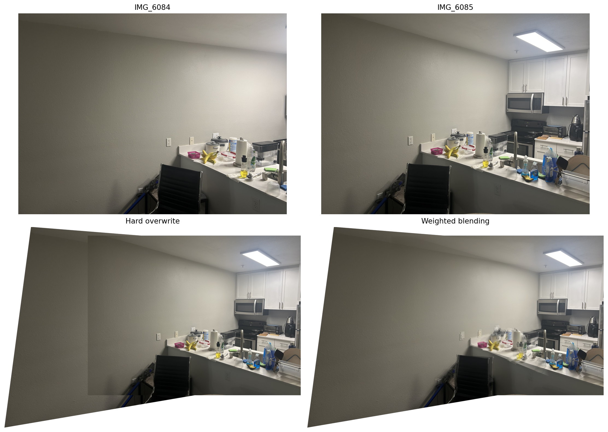
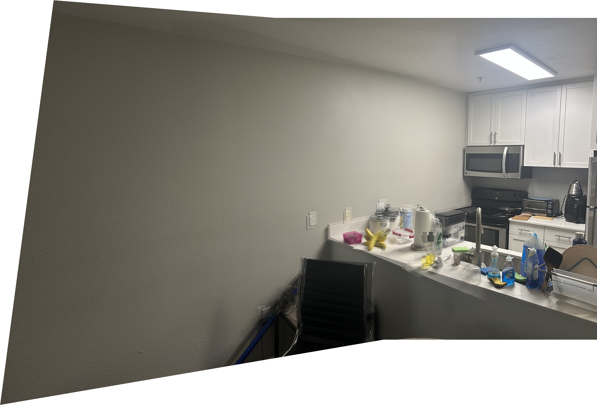
Blending softens the brightness seam, but nearby objects and the chair still show noticeable ghosting. The large fitting error suggests inconsistent matches and/or parallax. A single homography cannot align different depths if the camera translated. Another big issue is that there are no real features that I could match on the wall (since the textures are not differentiable). However, I talked to a TA and he said it shouldn't be a problem and I shouldn't lose points. This is a good example of real world inconsistencies.
Left Elevator → Right Elevator; used 18 correspondences. Full resolution mean reprojection error: 14.71 px; maximum: 30.37 px.
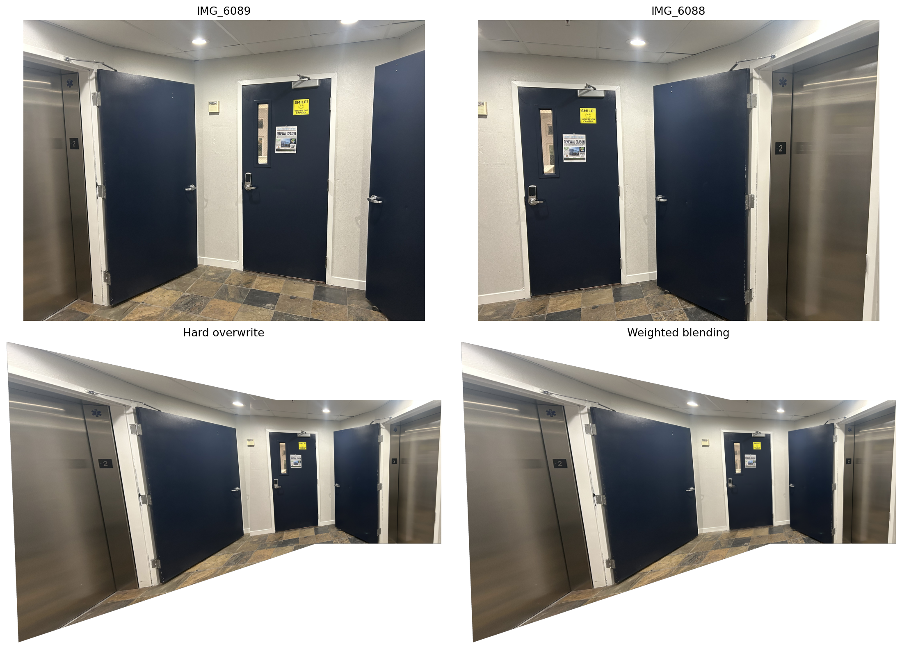
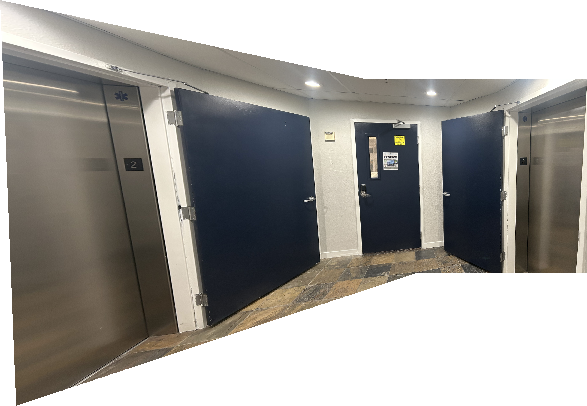
The hallway forms a wider view, with extremely minor residual edge misalignment. The left side stretches because it is warped into the second image’s perspective.